Joel Jesse and Sarah Catherine Stapley Roundy Family
Home
Histories
Charts
Photos
Maps
Restricted
News
Info
Contact
| <--(return)-- |   | Shadrach Roundy and Betsy Quimby |
----> |  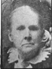----> 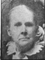----> | Lorenzo Wesley and Priscilla Parrish  |
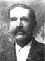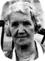 | Joel Jesse Roundy and Sarah Catherine Stapley Married 11 Mar. 1887 |
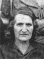 |
Sarah Elizabeth Roundy 11 July 1888 - Married Victor L. Sylvester The 1st child of Joel Jesse Roundy and Sarah Catherine Stapley |
 |
James Lorenzo Roundy 25 Dec. 1890 - Married The 2nd child of Joel Jesse Roundy and Sarah Catherine Stapley |
| 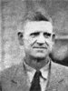 |
Jesse C. Roundy 21 Sep. 1893 - Married The 3rd child of Joel Jesse Roundy and Sarah Catherine Stapley |
| 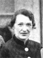 |
Rebecca Annis Roundy 9 Feb. 1896 - Married Albert C. Tietjen The 4th child of Joel Jesse Roundy and Sarah Catherine Stapley |
| 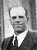 |
Golden Parrish Roundy 23 June 1989 - Married The 5th child of Joel Jesse Roundy and Sarah Catherine Stapley |
| 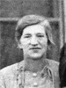 |
Estella Roundy 11 May 1901 - Married Ellis A. Russell The 6th child of Joel Jesse Roundy and Sarah Catherine Stapley |
| 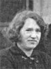 |
Reba Roundy 21 Feb. 1904 - Married The 7th child of Joel Jesse Roundy and Sarah Catherine Stapley |
| 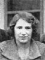 |
Reva Roundy 21 Feb. 1904 - Married George B. Webster The 8th child of Joel Jesse Roundy and Sarah Catherine Stapley |
| 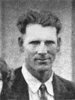 |
Karl G. Roundy 3 Mar. 1907 - Married The 9th child of Joel Jesse Roundy and Sarah Catherine Stapley |
Back to Buchanan Family History web pages.